专题1.3 从立体图形到平面图形（二）
专题1.3 从立体图形到平面图形（二）

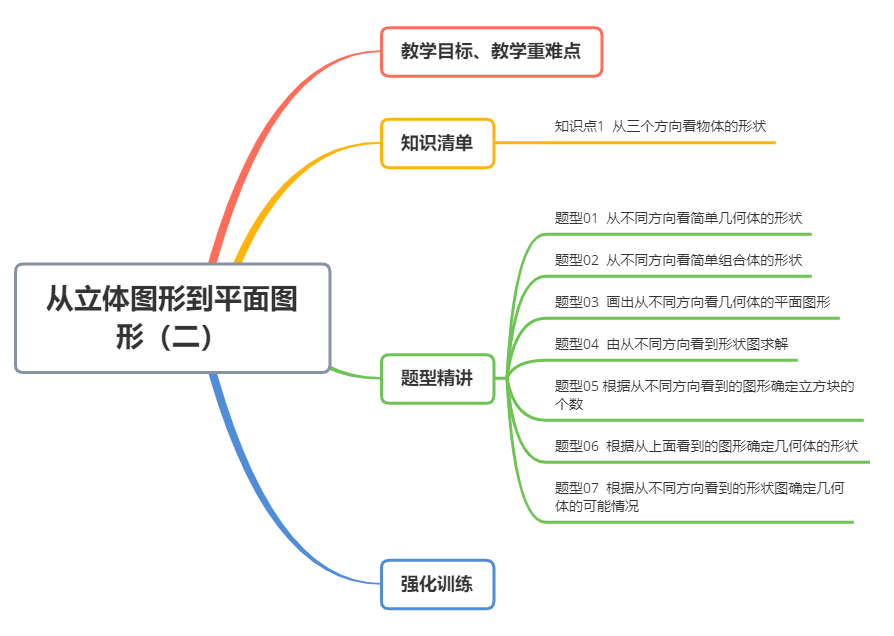

教学目标 | 1.能识别简单物体从三个方向看到的形状图. 2.会画正方体及其简单组合体从三个不同方向看到的形状图. 3.能根据物体从三个方向看到的形状图描述基本几何体或实物原形. |
教学重难点 | 1.重点：能画出从不同方向看到的小立方体所搭几何体的形状图. 2.难点：根据从不同方向看到的形状图描述几何体. |

知识点1 从三个方向看物体的形状
一般是从以下三个方向：(1)从正面看；(2)从左面看；(3)从上面看．（如下图）

【即学即练】
1．如图，一个圆柱体切去一部分，则从上面看到的图形是（ ）

A． B．
B． C．
C． D．
D．
【答案】B
【知识点】从不同方向看几何体
【分析】ｇｃ
本题主要考查了从三个方向看几何体．熟练掌握从三个方向看到的形状图是解题的关键．根据从上面看到的形状图判断即得．
【详解】
解：A. ，是从正面看到的图形；
B. ，是从上面看到的图形；
C. ，不是这个切去一部分的圆柱体从各个方面看到的图形；
D. ，是从左面看到的图形．
故选：B．
2．在一仓库里堆放着若干个相同的正方体小货箱，仓库管理员将这堆货箱从不同方向看到的图形画了出来，如图所示，则这堆正方体小货箱共有 箱．
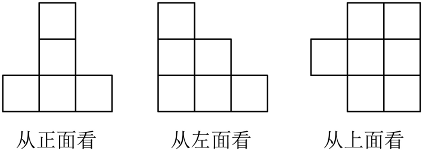
【答案】10
【知识点】从不同方向看几何体
【分析】本题主要考查了从不同方向看几何体，一般从上面看着手，根据“长对正，高平齐，宽相等”求出小正方体的个数．
由图可知，该几何体有3层，由从上面看可得第一层正方体的个数，由从正面看和左面看可得第二层、第三层正方体的个数，相加即可．
【详解】由图可知，该几何体有3层，由从上面看可得第一层正方体的个数为7，由从正面看和左面看可得第二层有2个正方体，第三层有1个正方体，共10个，
所以这堆正方体小货箱共有10箱．
故答案为：10．
3．将若干个棱长为 的小立方块摆成如图所示的几何体．
的小立方块摆成如图所示的几何体．
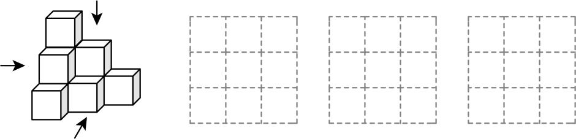
(1)①请分别画出从正面，左面和上面观察该儿何体看到的平面图形：
②则该几何体的表面积为______；
(2)依图中摆放方法类推，当几何体摆放了5层时，求该几何体的表面积．
【答案】(1)①见解析；②
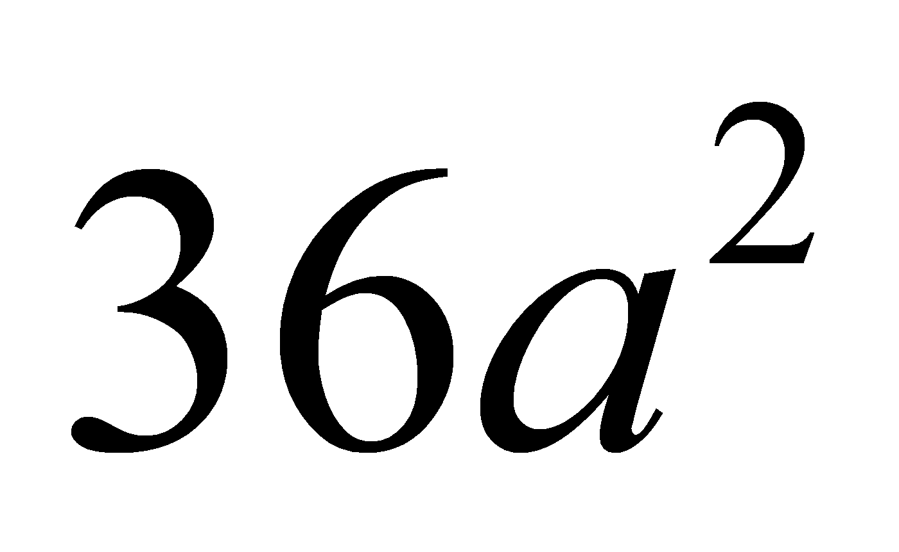
(2)当几何体摆放了5层时，该几何体的表面积为
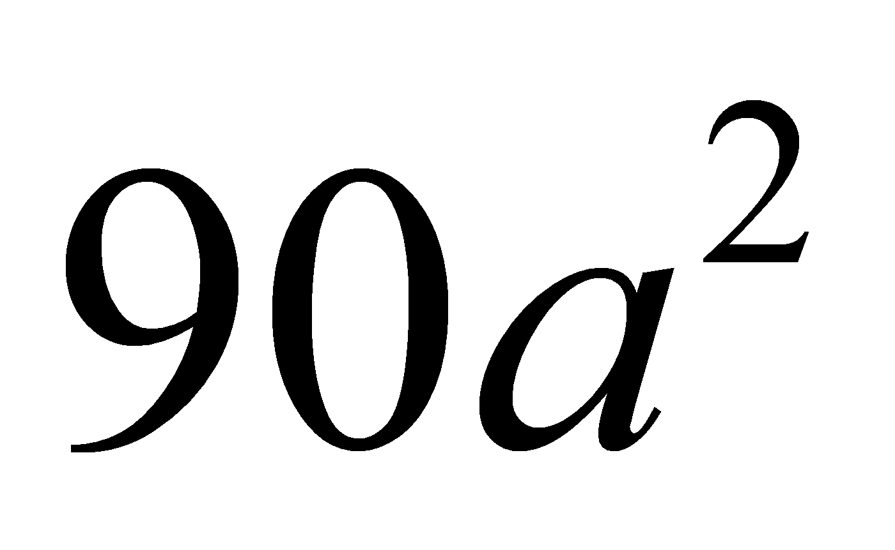
【知识点】从不同方向看几何体
【分析】本题考查了几何体的表面积，关键是要注意立体图形的各个面，及每个面的正方形的个数．
（1）①画出从上、下、左三个方向看到的图形即可；②根据每个方向上均有6个等面积的小正方形计算即可；
（2）每个方向上均有
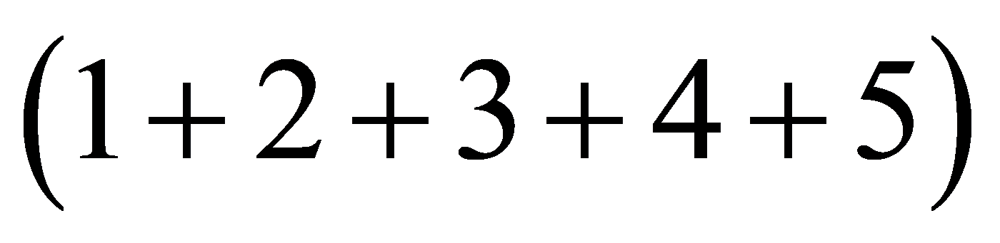
个等面积的小正方形．【详解】（1）解：①如图所示，
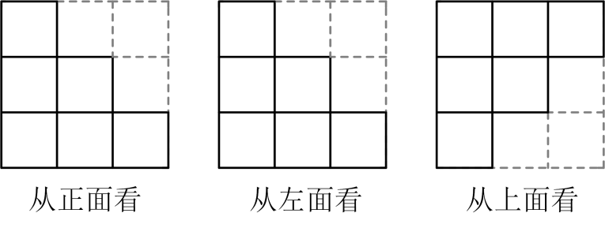
②解：
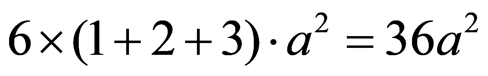
，故该几何体的表面积为，
故答案为：
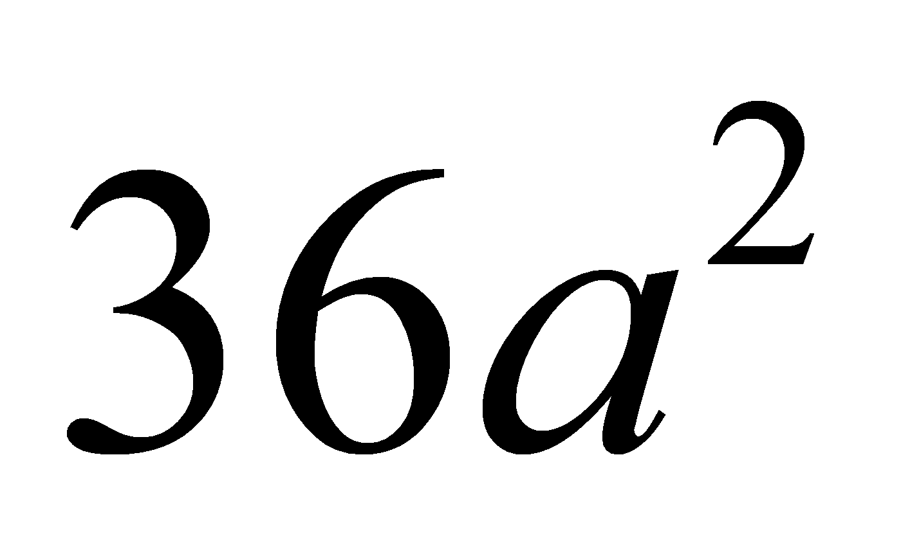
；（2）解：
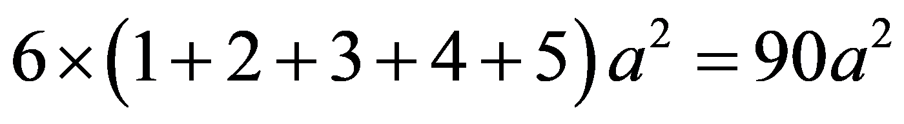
，当几何体摆放了5层时，该几何体的表面积为．

题型01 从不同方向看简单几何体的形状
【典例1】如图所示的几何体从左面看到的形状图是（ ）

A． B．
B． C．
C． D．
D．
【答案】A
【知识点】从不同方向看几何体
【分析】本题主要从不同方向看几何体，熟练掌握几何体的特征是解题的关键；因此此题可根据几何体的特征进行求解．
【详解】
解：由图可知从左面看到的形状图是
故选A．
【变式1】如图是由5个完全相同的小正方体搭成的几何体，从左面看得到的平面图形是（ ）
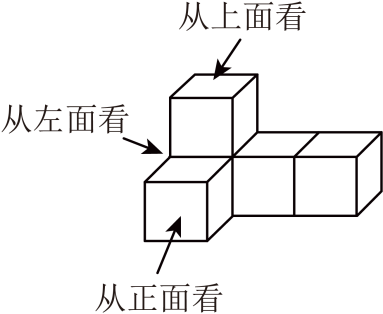
A．
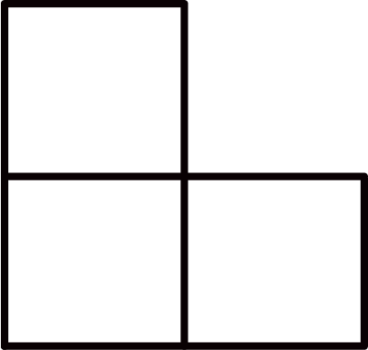
B．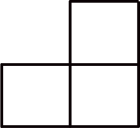
C．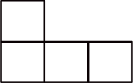
D．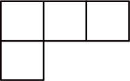
【答案】A
【知识点】从不同方向看几何体
【分析】本题考查了从不同方向看几何体，根据从左面看得到的图形可得答案．
【详解】解：由图可知，从左面看得到的图形为：
故选：A．
【变式2】如图所示的家用热水瓶，从左面看这个家用热水瓶的形状图为（ ）
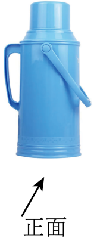
A． B．
B．
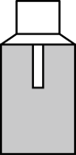
C． D．
D．
【答案】B
【知识点】从不同方向看几何体
【分析】本题主要考查了从不同的方向看几何体，从左面看，看到的图形可以分为三部分，从下到上依次为长方形，梯形，正方形，再结合还有一个手把即可得到答案．
【详解】解：从左面看，看到的图形下面一部分是一个长方形，紧挨着长方形的上面是一个梯形，梯形上面是一个正方形，且长方形中有一条从上而下的竖线，即看到的图形如下：
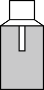
，故选：B．
【变式3】如图所示的几何体是由6个大小相同的小正方体搭成的，从前面看到的图形是（ ）

A． B．
B．
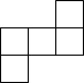
C．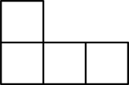
D．
【答案】A
【知识点】从不同方向看几何体
【分析】本题考查了简单组合体的三视图，从前面看得到的图形是主视图或正视图．
根据从前面看得到的图形是主视图或正视图，可得答案．
【详解】解：从前面看，有三列，从左到右第一列和第二列是一个正方形，第三列是两个正方形．
即看到的图形是．
故选：A．
题型02 从不同方向看简单组合体的形状
【典例1】从不同方向看某个立体图形得到的平面图形如图所示，则这个立体图形可能是下面选项中的（ ）

A．
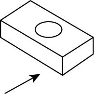
B． C．
C．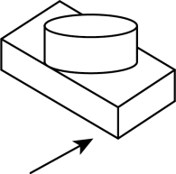
D．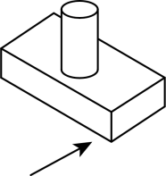
【答案】D
【知识点】从不同方向看几何体
【分析】本题考查三视图还原几何体，根据几何体与从不同角度看到的几何图形的关系解答即可．
【详解】解：根据从不同方向看某个立体图形得到的平面图形可知符合的立体图形为D选项，
故选：D．
【变式1】如图，传统益智玩具原木旋转陀螺是圆锥与圆柱的组合体，从正面看它的视图是（ ）

A． B．
B． C．
C．
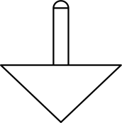
D．
【答案】A
【知识点】从不同方向看几何体
【分析】此题考查了从不同方向看几何体．根据从组合体正面看到的平面图形即可得到答案．
【详解】解：由题意得从正面看它的视图是：
，
故选：A．
【变式2】篆刻是中华传统艺术之一．如图是一块雕刻印章的材料，从正面看这个印章，得到的平面图形是（ ）
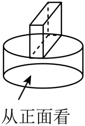
A．
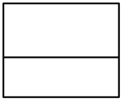
B．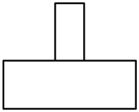
C．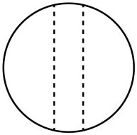
D．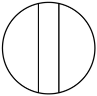
【答案】B
【知识点】从不同方向看几何体
【分析】本题考查从不同方向看几何体，掌握简单组合体从不同方向看到的图形的画法是正确解答的关键；画出从正面看这个印章的平面图形，进行作答即可；
【详解】解：这个组合体从正面看，得到的平面图形如图所示：
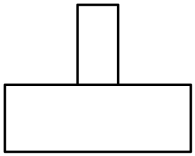
故选：B
【变式3】如图是由一个长方体和一个圆锥组成的立体图形，从前面看该立体图形得到的平面图形是（ ）

A． B．
B．
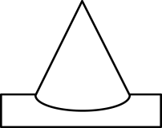
C． D．
D．
【答案】C
【知识点】从不同方向看几何体
【分析】本题考查了从不同方向看几何体，根据圆锥和长方体从上面看得到的图形作答是解答本题的关键．由一个长方体和圆锥组合而成的立体图形，圆锥从前面看是三角形，长方体从前面看是长方形，故组合图形包含长方形以及三角形，选出答案．
【详解】解：依题意，由一个长方体和圆锥组合而成的立体图形，得圆锥从前面看是三角形，长方体从前面看是长方形，
故组合图形包含长方形以及三角形，
故选C
题型03 画出从不同方向看几何体的平面图形
【典例1】如图，这是由8个大小相同的小立方块搭建的几何体，请按要求在方格内分别画出从 这个几何体的三个不同方向看到的形状

【答案】见解析
【知识点】从不同方向看几何体
【分析】根据简单组合体的从不同方向画出相应的图形即可．
本题考查了简单组合体的从不同方向的画法，掌握简单组合体从不同方向的画法是正确解答的前提．
【详解】解：这个几何体的三个不同方向看到的形状图如图所示：
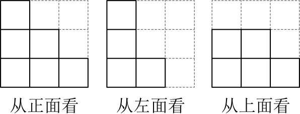
【变式1】如图是用8个相同的小正方体搭成的几何体，请在对应的网格中画出从该几何体的正面、左面和上面看到的形状图．

【答案】见解析
【知识点】从不同方向看几何体
【分析】本题考查了从不同方向看几何体，根据从正面看从左往右3列正方形的个数依次为3、1、2；从左面看从左往右2列正方形的个数依次为3、1；从上面看从左往右4列正方形的个数依次为2、1、2；依此画出图形即可．
【详解】解：如图所示．
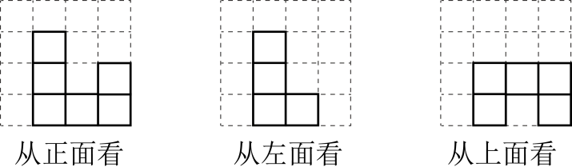
【变式2】如图，是由若干个完全相同的小正方体堆成一个几何体．请在网格中分别画出从正面、左面和上面看到的这个几何体的形状图．

【答案】画图见解析
【知识点】从不同方向看几何体
【分析】本题考查从不同方向看小正方体堆砌的几何体．在画图时一定要将物体的边缘、棱、顶点都体现出来，看得见的轮廓线都画成实线，看不见的画成虚线，不能漏掉．由几何体可得从正面看有3列，每列小正方形数目分别为2、1、1；从左边看有2列，每列小正方形数目分别为2、1；从上面看有3列，每行小正方形数目分别为1、1、2，进而得出答案．
【详解】解：如图，从正面、左面和上面看到的这个几何体的形状图如下：
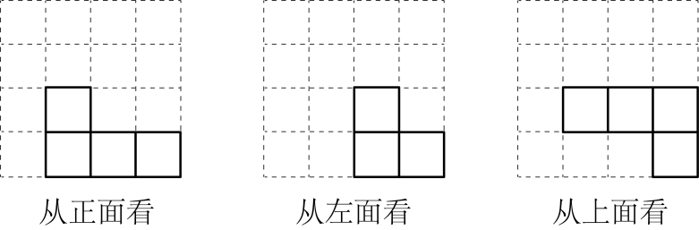
；【变式3】如图是由7个相同的正方体搭成的几何体，请在对应位置画该几何体从正面、左面和上面得到的形状图．

【答案】见解析
【知识点】从不同方向看几何体
【分析】本题主要考查了从不同方向看几何体，根据“7个完全相同的小正方体”正确判断出从正面、左面和上面看得到的平面图是解题的关键．直接画出从正面、左面和上面看得到的形状图即可．
【详解】解：如图所示：
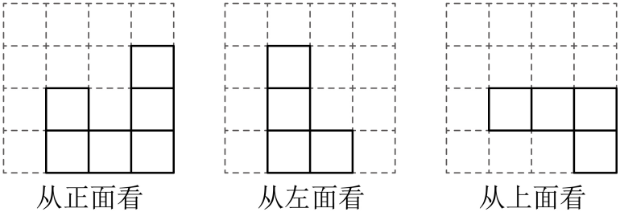
题型04 由从不同方向看到形状图求解
【典例1】如图是某几何体从正面、左面、上面看到的形状图．

(1)这个几何体的名称是 ；
(2)若从正面看到的长方形的宽为4 ，长为9，从左面看到的宽为3，从上面看到的直角三角形的斜边为5，则这个几何体中所有棱长的和是多少？它的表面积是多少？
，长为9，从左面看到的宽为3，从上面看到的直角三角形的斜边为5，则这个几何体中所有棱长的和是多少？它的表面积是多少？
【答案】(1)三棱柱
(2)这个几何体中所有棱长的和是51，表面积是120 ．
．
【知识点】从不同方向看几何体、由展开图计算几何体的表面积
【分析】此题考查判断几何体，掌握棱柱的侧面都是长方形，上下底面是几边形就是几棱柱是解决问题的关键．
（1）只有棱柱从左面看和从正面看才能出现长方形，根据从上面看是三角形，可得到此几何体为三棱柱；
（2）3条长 的高，加上两个三角形的周长就是几何体的所有棱长和；三个长为，宽分别为
的高，加上两个三角形的周长就是几何体的所有棱长和；三个长为，宽分别为 、
、 、
、 的长方形的面积与两个直角三角形的面积和就是表面积．
的长方形的面积与两个直角三角形的面积和就是表面积．
【详解】（1）解：这个几何体是三棱柱．
故答案为：三棱柱；
（2）解：这个几何体的所有棱长的和
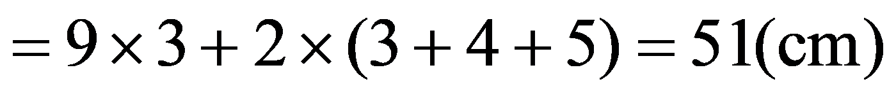
．表面积
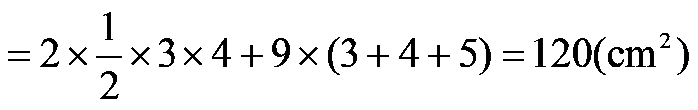
．【变式1】如下图所示的是从正面和上面看一个几何体所看到的图形（单位：
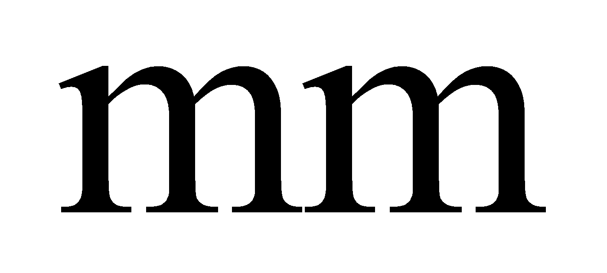
）．求该几何体的体积．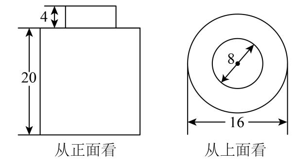
【答案】
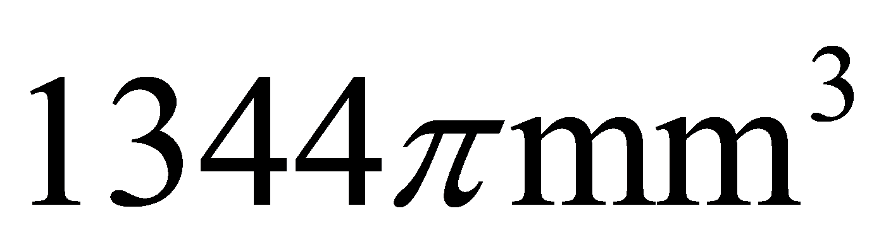
【知识点】从不同方向看几何体、 圆柱的体积
【分析】利用圆柱的体积公式直接计算即可．
本题考查了由三视图判断几何体，圆柱体积的计算，解题的关键是熟知圆柱的体积的计算方法，难度不大，属于基础题．
【详解】解：
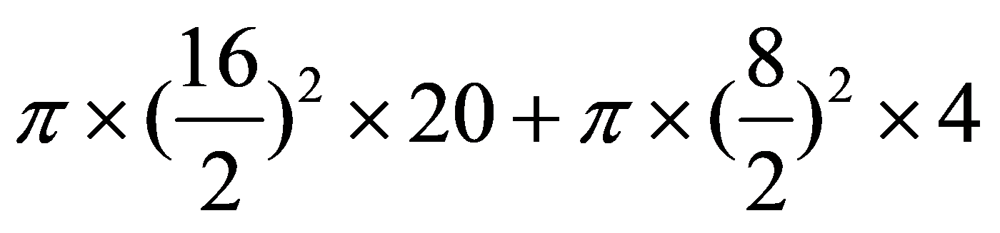
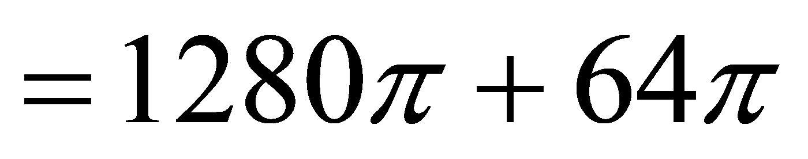
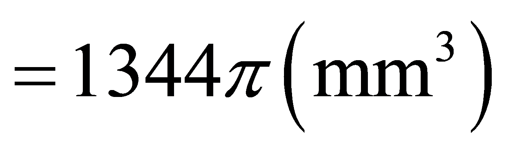
，答：该几何体的体积为．
【变式2】如图是一个几何体的从三个方向看到的形状图．
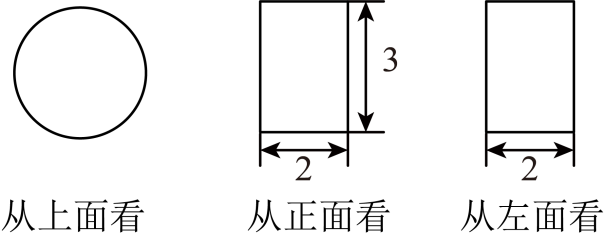
(1)写出这个几何体的名称：________；
(2)根据图中数据（单位： ），求它的表面积和体积．（结果保留
），求它的表面积和体积．（结果保留 ）
）
【答案】(1)圆柱
(2)体积为
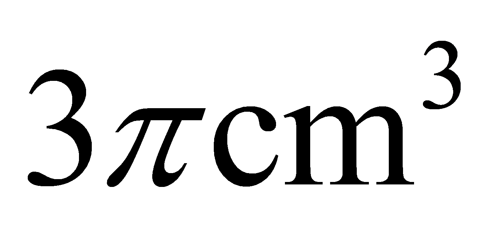
，表面积为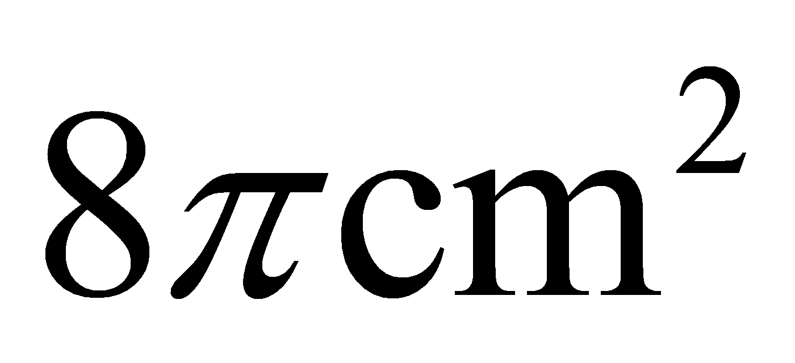
【知识点】从不同方向看几何体
【分析】本题主要考查了从不同的方向看几何体，求圆柱的体积和表面积：
（1）根据从正面看和从左面看都是长方形，从上面看是一个圆，结合圆柱的特点可知该几何体是圆柱；
（2）该圆柱的底面圆直径为 ，高为
，高为 ，据此根据圆柱体积和表面积计算公式求解即可．
，据此根据圆柱体积和表面积计算公式求解即可．
【详解】（1）解：该几何体从正面看和从左面看都是长方形，从上面看是一个圆，则该几何体是圆柱，
故答案为：圆柱；
（2）解：由题意得，该圆柱的底面圆直径为，高为，
∴该圆柱的体积为
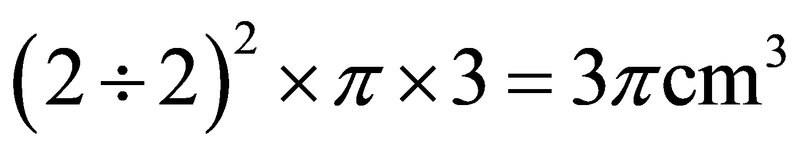
，表面积为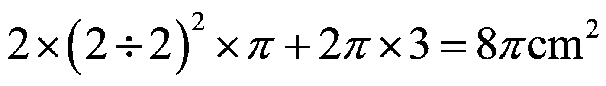
．【变式3】如图，是某几何体从三个方向分别看到的图形．

(1)说出这个几何体的名称；
(2)若图①的长为 ，宽为；图②的宽为；图③直角三角形的斜边长为，试求这个几何体的所有棱长的和是多少？它的侧面积多大？
，宽为；图②的宽为；图③直角三角形的斜边长为，试求这个几何体的所有棱长的和是多少？它的侧面积多大？
【答案】(1)三棱柱
(2)棱长和为 ，侧面积为
，侧面积为
【知识点】从不同方向看几何体
【分析】本题考查了由三视图判断几何体的形状以及几何体的展开图等知识，正确得出物体的形状是解题的关键．
（1）直接利用三视图可得出几何体的形状；
（2）利用已知各棱长分别得出所有棱长的和以及它的侧面积．
【详解】（1）解：这个几何体为三棱柱；
（2）棱长和为
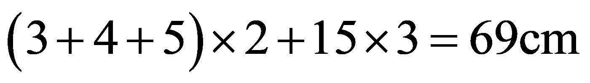
，侧面积为 ．
．
题型05 根据从不同方向看到的图形确定立方块的个数
【典例1】注重想象能力一个几何体是由一些大小相同的小正方块摆成的，从前面看和从上面看到的平面图形如图所示，则组成这个几何体的小正方块最多有 个．
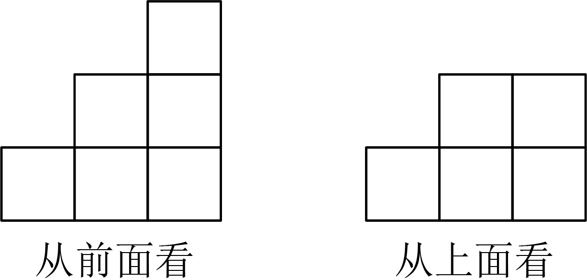
【答案】11
【知识点】从不同方向看几何体
【分析】本题考查从不同方向看几何体，利用俯视图标数法，标出小正方块最多的情况即可．
【详解】解：利用俯视图标数法，标出小正方块最多的情况如下：
（个）；
故答案为：11．
【变式1】由若干个相同的小正方体搭成的一个几何体，从正面和左面看到的这个几何体的形状图如图所示，则组成这个几何体的小正方体的个数最少有 个．
【答案】9
【知识点】从不同方向看几何体
【分析】本题考查简单组合体的三视图，根据主视图、左视图的形状，画出需要小正方体个数最少时的俯视图，并标注所摆放的小正方体的个数即可，理解视图的定义，掌握简单组合体三视图的画法和形状是正确解答的关键．
【详解】解：需要小正方体个数最少时，从上面看的图形如图所示，其中数字表示该位置所摆放小正方体的个数，
因此需要的小正方体的个数最少为 （个），
（个），
故答案为：9．
【变式2】用若干大小相同的小立方块搭成一个几何体，使得从上面和从左面看到的这个几何体的形状如图所示，则搭成该几何体最多需要 个小立方块．
【答案】10
【知识点】从不同方向看几何体
【分析】本题考查了从不同方向看几何体，掌握不同方向看几何体的方法是解答关键．在从上面看的形状图中标出小正方体的个数来求解．
【详解】解：如图所示
搭成该几何体最多需要的小立方块为：（个）．
故答案为： .
.
【变式3】一个由小立方块摆成的几何体，无论从正面，还是从左面都可以看到如图所示的图形，请你判断一下：最少可以用 个小立方块，最多可以用 个小立方块．

【答案】 5 13
【知识点】从不同方向看几何体
【分析】本题考查了由三视图判断几何体：由三视图想象几何体的形状，首先，应分别根据主视图、俯视图和左视图想象几何体的前面、上面和左侧面的形状，然后综合起来考虑整体形状．熟悉常见几何体的三视图．
根据主视图和左视图画出小正方体最少和最多时几何体的俯视图，从而确定最少和最多小正方体的个数．
【详解】
解：画出小正方体最少和最多时几何体的俯视图，
所以这个几何体最多可以用5个小正方体，最少可以用13个小正方体．
故答案为： ；
； ．
．
题型06 根据从上面看到的图形确定几何体的形状
【典例1】一个几何体由若干个大小相同的小立方块搭成，从上面看到的几何体的形状如图所示，其中小正方形中的数字表示在该位置的小立方块的个数．请画出从正面和左面看到的这个几何体的形状图．

【答案】见解析
【知识点】从不同方向看几何体
【分析】本题考查了从不同方向看几何体，理解题意找到几何体的特征是解题的关键．根据题意可得，从正面看有4列，每列小正方数形数目分别为2，3，2，4；从左面看有3列，每列小正方形数目分别为3，2，1，据此即可画出图形．
【详解】解：如图所示，从正面和左面看到的这个几何体的形状图即为所求：
【变式1】如图，是一个小正方体所搭几何体从上面看得到的平面图形，正方形中的数字表示在该位置小正方体的个数．
(1)请你画出它从正面和从左面看得到的平面图形．
(2)若每个小正方体的棱长为1，求搭建几何体的体积，
【答案】(1)见解析
(2)12
【知识点】从不同方向看几何体
【分析】本题考查几何体的三视图画法．由几何体的俯视图及小正方形内的数字，可知主视图的列数与俯视数的列数相同，且每列小正方形数目为俯视图中该列小正方形数字中的最大数字．左视图的列数与俯视图的行数相同，且每列小正方形数目为俯视图中相应行中正方形数字中的最大数字．
（1）由已知条件可知，主视图有3列，每列小正方形数目分别为3，2，3，左视图有2列，每列小正方形数目分别为3，3．据此可画出图形；
（2）根据小正方体的个数可得体积．
【详解】（1）解：如图所示：
（2）解：由题意得，搭建几何体的体积为．
【变式2】一个几何体由n个大小相同的小立方块搭成，从上面看到的几何体的形状图如图所示，其中小正方形中的数字表示在该位置的小立方块的个数．

(1) ________；
________；
(2)请在右面的网格中画出从正面和左面看到的这个几何体的形状图．
【答案】(1)8
(2)见解析
【知识点】从不同方向看几何体
【分析】本题考查了几何体的从不同方向看，熟练掌握几何体的画法是解题的关键．
（1）根据从上面看到的小正方体的个数求解即可；
（2）根据从正面看，从左面看的画图要求，画图解答即可．
【详解】（1）解：根据从上面看到的小正方体的个数可知，
（个），
故答案为：8．
（2）解：解：根据图中所示的小正方体的个数可得：
【变式3】一个几何体由几个大小相同的小立方块搭成．从上面看到的这个几何体的形状图如图所示，其中小正方形中的数字表示在该位置的小立方块的个数．

(1)请画出从正面、左面看到的这个几何体的形状图；
(2)能不能在某些位置增加小立方块，使从正面、左面看到的几何体的形状图不变？如果能，请画出两种不同位置摆放的从上面看的形状图，并在图上小正方形中标出该位置的小立方块的个数；如果不能，请说明理由；
(3)能不能减少某些位置的小立方块，使从正面、左面看到的几何体的形状图不变？最少可以用几个小立方块？
【答案】(1)见解析
(2)见解析
(3)能，4个
【知识点】从不同方向看几何体
【分析】本题主要考查了从不同的方向看几何体：
（1）从正面看和从左面看的图形相同，都分为上下两层，共三列，从左边起，第一列下面一层有一个小正方形，第二列上下两层各有一个小正方形，第三列下面一层有一个小正方形，据此可得答案；
（2）在从上面看到的图形中， 在的正方形中，任意一个位置添加一个小正方形都符合题意；
（3）在从上面看到的图形中，把与有两个小立方块相邻的立方块去掉即可得到答案．
【详解】（1）解：如图所示，即为所求；
（2）解：如图所示，即为所求；
（3）解：如图所示，最少的情形如下：
∴能减少某些位置的小立方块，使从正面、左面看到的几何体的形状图不变，最少可以用4个立方块．
题型07 根据从不同方向看到的形状图确定几何体的可能情况
【典例1】用若干个完全相同的小立方块搭一个几何体，使几何体从正面、上面看到的形状图如图所示．从上面看到的形状图中，小正方形中的字母表示在该位置小立方块的个数．
(1) ，
， ，
， 表示的数字分别是________，________，________；
表示的数字分别是________，________，________；
(2)这个几何体最少是由几个小立方块搭成的？最多呢？
(3)当 ，
， 时，画出从左面看这个几何体得到的形状图．
时，画出从左面看这个几何体得到的形状图．
【答案】(1) ，
， ，
，
(2) ，
，
(3)见解析
【知识点】从不同方向看几何体
【分析】本题考查了从不同方向看几何体，，明确从不同方向看得到的形状图与原图的关系及画图方法是解题的关键．
（1）由从正面看得到的图形可知，第二列小立方体的个数均为，第列小正方体的个数为，那么 ，
， ，
， ；
；
（2）所用的小立方块个数最少，则 ，
， ，三处位置有一处放置
，三处位置有一处放置 个，其余两处各放置个，所用的小立方块个数最多，则，，三处位置都放置2个；
个，其余两处各放置个，所用的小立方块个数最多，则，，三处位置都放置2个；
（3）由从左面看得到的形状图有列，每列小正方形数目分别为，，，画图即可；
【详解】（1）解：；；
（2）解：若所用的小立方块个数最少，则，，三处位置有一处放置个，其余两处各放置个，
故这个几何体最少由个小立方块搭成．
若所用的小立方块个数最多，则，，三处位置都放置2个，
故该几何体最多由个小立方块搭成．
（3）从左面看到的形状图，如图所示．
【变式1】用小立方块搭一个几何体，使从正面和上面看到的形状图如图所示，上面看到的形状图中小正方形中的字母表示在该位置小立方块的个数．
(1)求a的值和b的最大值；
(2)这个几何体最少由几个小立方块搭成？最多呢？
【答案】(1) ，b的最大值为2
，b的最大值为2
(2)最少是11个，最多是16个
【知识点】从不同方向看几何体
【分析】本题主要考查从不同方向看几何体，熟练掌握从不同方向看得到的形状图的画法是解题的关键；
（1）根据题目中从正面和上面看到的形状图，即可判断求解；
（2）根据题目中从正面和上面看到的形状图，进行分析即可求解．
【详解】（1）根据从正面看到的形状图可知，，b的最大值为2；
（2）根据从正面和上面看到的形状图可知，
当搭这个几何体所用的小立方块最少时，
三个数之和为个；
两个数之和为 个；
个；
个；
故小立方块最少为个．
当搭这个几何体所用的小立方块最多时，
三个数之和为个；
两个数之和为 个；
个；
个；
故小立方块最多为个．
【变式2】【问题背景】 用小立方块搭一个几何体，使它从正面和上面看到的形状如图所示，从上面看到形状中小正方形中的字母表示在该位置上小立方块的个数．
【初步探究】（1） 表示的数是______，
表示的数是______， 表示的数是______，
表示的数是______， 表示的数是______；
表示的数是______；
【深入探究】（2）这个几何体最少由____个小立方块搭成，最多由_____个小立方块搭成。
（3）当 ，
， 时，画出从左面看这个几何体的形状．
时，画出从左面看这个几何体的形状．
【答案】（1） ，
， ，；（2）
，；（2） ；
； ；（3）见解析
；（3）见解析
【知识点】从不同方向看几何体
【分析】本题考查了从不同方向看几何体的知识；
（1）根据第三列小立方体的个数为3，第二列为个，即可求解；
（2）根据第一列小立方体的个数最多为，最少为，那么加上其他两列小立方体的个数即可；
（3）根据从左面看到的图形有三列，每列小正方形数目分别为，， ，即可求解．
，即可求解．
【详解】解：（1）根据从正面看到的图形可知，第三列小立方体的个数为3，第二列为个，
∴表示的数是3，表示的数是，表示的数是；
故答案为：，，；（．
（2）这个几何体最少由 个小立方块搭成，最多由
个小立方块搭成，最多由 个小立方块搭成；
个小立方块搭成；
故答案为：；．
（3）∵，，从左面看到的图形如图所示，

【变式3】问题1： 一个几何体由大小相同的小正方体搭成，从上面看到的几何体的形状如图所示，其中小正方形中的数字表示在该位置的小正方体个数．
（1）请画出从正面和从左面看到的这个几何体的形状图．
（2）若小正方体的棱长为 ，求该几何体的表面积．
，求该几何体的表面积．
问题2：用小立方块搭一个几何体，使得它从左面看和从上面看的图形如图所示，
这样的几何体最少要几个立方块．最多要几个立方块？并画出最少时从正面看到的图形．
【答案】问题1：（1）作图见解析；（2）；问题2：最少9个，最多13个，作图见解析
【知识点】从不同方向看几何体
【分析】本题考查从不同方面看组合体，根据平面图形还原出立体图形是解决问题的关键．
问题1：（1）由从上面看到的几何体的形状即可得到从左面及上面看几何体的平面图形；
（2）由不同方面看组合体得到的立体图形可知，共有13个小正方体，由还原的空间组合体即可得到表面积；
问题2：根据从左面看和从上面看的图形可知，搭建这样的几何体最少9个，最多13个，最少时有9个，作出从正面看到的图形即可得到答案．
【详解】解：问题1：（1）如图所示：
（2）从上面看到的几何体的形状如图所示：
 该组合体得到的立体图形共有13个小正方体，如图所示：
该组合体得到的立体图形共有13个小正方体，如图所示：
则组合体从上到下有4层，具体情况是：最上层1个小正方体，第2层有2个小正方体，第3层有4个小正方体，最底层6个小正方体，
①最上层1个小正方体，能计入几何体表面积的有上面、左面、右面、前面和后面，
 小正方体的棱长为，
小正方体的棱长为，
最上层1个小正方体可计入几何体表面积的面积为 ；
；
②第2层有2个小正方体，能计入几何体表面积的有左边小立方体的上面、左面、右面、前面和后面，
小正方体的棱长为，
第2层左边小正方体可计入几何体表面积的面积为；
第2层有2个小正方体，能计入几何体表面积的有右边小立方体的左面、右面、前面和后面，
小正方体的棱长为，
第2层右边小正方体可计入几何体表面积的面积为；
③第3层有4个小正方体，能计入几何体表面积的左边2个小立方体中，前侧的1个小正方体有上面、左面、右面和前面，
小正方体的棱长为，
第3层左边前侧小正方体可计入几何体表面积的面积为；
第3层有4个小正方体，能计入几何体表面积的左边2个小立方体中，后侧的1个小正方体有左面、右面和后面，
小正方体的棱长为，
第3层左边后侧小正方体可计入几何体表面积的面积为；
第3层有4个小正方体，能计入几何体表面积的右边2个小立方体中，前侧的1个小正方体有左面、右面和前面，
小正方体的棱长为，
第3层右边前侧小正方体可计入几何体表面积的面积为；
第3层有4个小正方体，能计入几何体表面积的右边2个小立方体中，后侧的1个小正方体有上面、左面、右面和后面，
小正方体的棱长为，
第3层右边后侧小正方体可计入几何体表面积的面积为；
④最底层有6个小正方体，能计入几何体表面积的左边2个小立方体中，前侧的1个小正方体有下面、左面、右面和前面，
小正方体的棱长为，
最底层左边前侧小正方体可计入几何体表面积的面积为；
最底层有4个小正方体，能计入几何体表面积的左边2个小立方体中，后侧的1个小正方体有左面和后面，
小正方体的棱长为，
第3层左边后侧小正方体可计入几何体表面积的面积为；
最底层有4个小正方体，能计入几何体表面积的中间2个小立方体中，前侧的1个小正方体有上面、下面和前面，
小正方体的棱长为，
最底层中间前侧小正方体可计入几何体表面积的面积为；
最底层有4个小正方体，能计入几何体表面积的中间2个小立方体中，后侧的1个小正方体有上面、下面、左面和后面，
小正方体的棱长为，
最底层中间后侧小正方体可计入几何体表面积的面积为；
最底层有4个小正方体，能计入几何体表面积的右边2个小立方体中，前侧的1个小正方体有下面、右面和前面，
小正方体的棱长为，
最底层右边前侧小正方体可计入几何体表面积的面积为；
最底层有4个小正方体，能计入几何体表面积的右边2个小立方体中，后侧的1个小正方体有下面、右面和后面，
小正方体的棱长为，
最底层右边前侧小正方体可计入几何体表面积的面积为；
综上所述，该几何体的表面积为；
问题2：由从左面看和从上面看的图形可知，搭建这样的几何体最少9个，最多13个，
最少时从正面看到的图有：

1．下列四个几何体，从上面往下看是三角形的是（ ）
A． B．
B． C． D．
C． D．
【答案】C
【知识点】从不同方向看几何体
【分析】本题考查了从不同方向看几何体，熟练掌握各几何体从上面往下看（即俯视图）所呈现的图形形状是解题的关键；
根据俯视图是从物体的上面往下看，逐项判断即可；
【详解】本题可根据常见几何体的俯视图（从上面往下看所得到的图形）的形状来逐一分析选项．
A、球体无论从哪个方向看，得到的平面图形都是圆，从上面往下看也是圆，不是三角形，所以该选项不符合题意；
B、正方体从上面往下看，得到的平面图形是正方形，不是三角形，所以该选项不符合题意；
C、三棱柱的上下底面是三角形，从上面往下看时，看到的图形就是三棱柱的上底面，是三角形，所以该选项不符合题意；
D、四棱台的上下底面是四边形，从上面往下看时，看到的图形是四边形（一个大四边形中间套一个小四边形 ），不是三角形，所以该选项不符合题意；
故选：C．
2．分别从前面、左面、上面观察一个立体图形，得到的平面图形如下图所示，该立体图形是（ ）

A．圆柱 B．圆锥 C．正方体 D．长方体
【答案】A
【知识点】从不同方向看几何体
【分析】本题考查了从不同方向看几何体，熟练掌握从不同方向看基本几何体所得到的形状是解题的关键．
由题中的平面图形即可直接得出答案．
【详解】解：由题意可知，该立体图形是圆柱，
故选： ．
．
3．如图是一个“粮仓”从三个不同的方向看到的视图，则这个几何体的体积是（ ）

A． B． C．85 D．40π
B． C．85 D．40π
【答案】B
【知识点】从不同方向看几何体
【分析】这个几何体是一个圆锥，一个圆柱的组合体，根据圆锥，圆柱的体积公式求解．
【详解】解：这个几何体的体积
．
故选：B．
【点睛】本题考查了由不同方向看几何体，解题的关键是由从不同方向看到的结果还原几何体．
4．一个几何体由大小相同的小立方块组成，从正面、左面和上面看到的几何体的形状如图所示，则搭成这个几何体需要的小立方块的个数为（ ）
A．5 B．6 C．7 D．8
【答案】C
【知识点】从不同方向看几何体
【分析】本题考查了从三个方向看，同时也体现了对空间想象能力方面的考查．首先，应分别根据三个图想象几何体的前面、上面和左侧面的形状，然后综合起来考虑整体形状．从上面看中可以看出最底层小正方体的个数及形状，结合另外两个图可以得出搭成这个几何体需要的小立方块的个数．
【详解】解：由从上面看易得最底层小正方体的个数为5，由其他两个图可知第一行第1列有2个正方体，第一行第2列有1个正方体，第一行第3列有2个正方体，第二行第1列有1个正方体，第二行第2列有1个正方体，
那么共有个正方体．
故选：C．
5．如图，这是由7个立方体叠成的几何体，用表示1个立方体，用表示2个立方体叠加，用 表示3个立方体叠加，则从上面看到的这个几何体的形状图是（ ）
表示3个立方体叠加，则从上面看到的这个几何体的形状图是（ ）
A． B． C． D．
【答案】D
【知识点】从不同方向看几何体
【分析】本题考查从不同方向看物体，根据几何体，从上面看可得到的形状图是有三行三列，第一行有2个立方体叠加，它们处于中间列；第二行有3列，左边列是1个立方体，中间列是2个立方体叠加，右边列是1个立方体；第三行有1列，处于中间，只有1个立方体．据此逐项判断即可．
【详解】解：从从上面看到的这个几何体的形状图是
．
故选：D
6．根据下列从不同方向看物体的图形，几何体是 ．

【答案】六棱柱
【知识点】从不同方向看几何体
【分析】本题主要考查了从不同的方向看物体．根据从正面和从左面看到的图可知，该几何体为柱体，根据从上面看到的图可知，该几何体上下两个面均为六边形，即可得出该几何体为六棱柱．
【详解】解：根据从正面和从左面看到的图可知，该几何体为柱体，根据从上面看到的图可知，该几何体上下两个面均为六边形，故该几何体为六棱柱．
故答案为：六棱柱．
7．从正面和从左面看一个长方体得到的形状图如图所示(单位： cm)，则其从上面看到的形状图的面积是 ．

【答案】12cm2
【知识点】从不同方向看几何体
【详解】试题解析：根据从左面、从正面看到的形状图的相关数据可得；
从正面看到的形状图是长为4cm宽为2cm的长方形，
从左面看到的形状图是长为3cm宽为2cm的长方形，
则从上面看到的形状图的面积是4×3=12cm2.
8．分别从前面、左面、上面观察圆柱，得到的平面图形的有关尺寸如图所示，则该圆柱的表面积为  （结果保留
（结果保留 ）．
）．
【答案】
【知识点】从不同方向看几何体
【分析】本题考查从不同方向看几何体，求圆柱体的表面积，根据从不同方向看到的图形得到圆柱体的高为 ，底面圆的直径为
，底面圆的直径为 ，根据圆柱体的表面积等于侧面积加上两个底面积进行计算即可．
，根据圆柱体的表面积等于侧面积加上两个底面积进行计算即可．
【详解】解：由图可知：圆柱体的高为，底面圆的直径为，
∴圆柱体的表面积；
故答案为：．
9．一个几何体由大小相同的小立方块搭成，从上面看到的形状如图所示，小正方形中的数字表示在该位置的小立方块的个数，若每个小立方块的棱长为1 ，涂该几何体的油漆价格为2元/，则该几何体表面涂满油漆所需费用为 元．
，涂该几何体的油漆价格为2元/，则该几何体表面涂满油漆所需费用为 元．
【答案】
【知识点】从不同方向看几何体
【分析】本题考查了求小立方块堆砌图形的表面积，由图可知：该几何体的表面积为：，据此即可求解；
【详解】解：由图可知：该几何体的表面积为：，
∴该几何体表面涂满油漆所需费用为元，
故答案为：
10．用相同的小立方块搭一个几何体，使得从前面、上面看这个几何体的形状图如图所示，这样的几何体最少要 个小立方块，最多要 个小立方块．
【答案】 6 7
【知识点】从不同方向看几何体
【分析】本题考查从不同角度看物体，从上面看可以看出最底层小立方块的个数及形状,从前面看可以看出每一层小立方块的层数和个数,从而算出总的个数．
【详解】解：从上面看，要 块，再正面看，除了底层，最少
块，再正面看，除了底层，最少 块多出来的，最多
块多出来的，最多 块多出来的；
块多出来的；
所以最少 块，最多是
块，最多是 块，
块，
故答案为：，．
11．如图所示的几何体，由五个大小相同的小正方体搭成．
(1)分别画出从正面，左面和上面看到的该几何体的形状图；
(2)当去掉一个小正方体_______时，剩余部分从左面看形状没有改变（填写图中小正方体的序号）．
【答案】(1)图见解析
(2)②
【知识点】从不同方向看几何体
【分析】本题考查从不同方形看几何体：
（1）分别画出从前面，左面和上面看到的图形即可；
（2）根据从左面看的形状不变，进行判断即可．
【详解】（1）解：由题意，作图如下：

（2）由图可知：去掉①或③时，从左面看的形状都会发生改变，去掉②时，形状不变，
故答案为：②．
12．用6个大小相同的小立方块搭成如图所示的几何体．

(1)请画出该几何体从正面、左面和上面看到的形状图；
(2)在这个几何体上再添加一些相同的小立方块，使得从左面和上面看到的形状图不变，那么最多可以再添加多少个小立方块？请在从上面看到的形状图里标注出来．
【答案】(1)见解析
(2)4，见解析
【知识点】从不同方向看几何体
【分析】本题主要考查了从不同的方向看几何体：
（1）先确定几何体从正面、左面和上面看到的形状图，再画出图形即可；
（2）结合堆砌图形的形状与从上面与左边看到的图形，再确定能够添加的位置和数量即可得到答案．
【详解】（1）如图所示，该几何体从正面、左面和上面看到的形状图
（2）在这个几何体上再添加一些相同的小立方块，使得从左面和上面看到的形状图不变，则要在几何体的第二排，从上面看的图形所示的2个位置放正方块，最多放4个，如图所示：
13．如图，已知长方形的长为，宽为 ，将该长方形绕其中一条长边所在直线旋转一周．
，将该长方形绕其中一条长边所在直线旋转一周．
(1)所得几何体名称叫 ，把这个几何体底面朝下放置，则它从 面和 面看形状相同；（填“正”或“上”或“左”）
(2)根据图中数据，求出该几何体的表面积．（结果保留）
【答案】(1)圆柱，正，左（或左，正）
(2)
【知识点】平面图形旋转后所得的立体图形、从不同方向看几何体
【分析】本题考查了面动成体，从不同方向看几何体，圆柱表面积的计算等知识，关键是掌握长方形绕其中一条边所在直线旋转一周所得的图形是圆柱．
（1）根据长方形绕其中一条边所在直线旋转一周所得的图形是圆柱，由圆柱的特点即可求解；
（2）先计算出圆柱的底面积与底面周长，则可计算出侧面积，从而求得表面积．
【详解】（1）解：长方形绕其中一条边所在直线旋转一周所得的图形是圆柱；
圆柱从正面看与从左面看，其形状相同，都是长方形；
故答案为：圆柱，正，左（或左，正）；
（2）解：根据题意可得：，，
所以，
所以．
14．如图1是由几个完全相同的小正方体搭成的一个几何体的俯视图，每个小正方体的棱长为 ．
．
(1)请画出从不同方向看该几何体得到的平面图形；（在图2所提供的方格内涂上相应的阴影即可）
(2)请计算出该几何体的表面积；
(3)如果小明还想添加一些相同的小正方体，并保持从上面和左面看得到的形状图不变，最多可以再添几个小正方体？
【答案】(1)见解析
(2)
(3)6个
【知识点】从不同方向看几何体
【分析】本题考查简单组合体的从不同方向看得到的平面图形，掌握简单组合体从不同方向看得到的平面图形画法是正确解答的关键．
（1）根据简单组合体从不同方向看得到的平面图形的画法即可画出从不同方向看到的平面图形；
（2）根据这个组合体从不同方向看得到的平面图形的面积进行计算即可；
（3）在从上往下看得到的图形的相应位置标注所能摆放最多的小正方体的个数即可．
【详解】（1）解：如图所示：
（2）解：表面积为；
（3）解：如图，从上往下看得到的图形的相应位置标注所能摆放的最多的小正方体的个数，所以最多可以添加（个）．
15．如图是用 个棱长是
个棱长是 ，大小相同的小正方体搭成的几何体．
，大小相同的小正方体搭成的几何体．

(1)请你画出该几何体的三种视图（不要涂成阴影）．
(2)这个几何体的表面积是______（包含底部）；
(3)如果要保证从上面看的图和从左面看的图不变，最多可以增加______个小正方体；
(4)如果要保证三个视图都不变，最多可以增加______个小正方体．
【答案】(1)见解析
(2)36
(3)4
(4)1
【知识点】求小立方块堆砌图形的表面积、已知三视图求最多或最少的小立方块的个数、从不同方向看几何体
【分析】本题主要考查从不同方向看立体图形，掌握立体图形的特点，表面积的计算方法是解题的关键．
（1）根据立体图形的特点画图示即可；
（2）根据立体图形表面积的计算方法计算即可；
（3）由图示特点进行分析即可；
（4）由图示特点进行分析即可．
【详解】（1）解：几何体的三视图如下，
（2）解：从下往上，第一层的表面积为： ，
，
第二层的表面积为：，
第三层的表面积为： ，
，
∴几何体的表面积为： ；
；
（3）解：根据（1）中的图示，保证从上面看的图和从左面看的图不变，可以在如图所示的位置各增加一个，
∴最多可以增加4个小正方形，
故答案为：4；
（4）根据（1）中的图示，要保证三个视图都不变，最多可以在（3）中1的位置增加1个小正方形，
故答案为：1．
16．一个几何体由10个大小相同的小立方块搭成，从上面观察这个几何体，看到的形状如图所示．其中小正方形中的数字表示在该位置的小立方块的个数．

(1)当 时，
时， 的值为 ；
的值为 ；
(2)当 时，请在网格中画出从正面、左面看到的这个几何体的形状图；
时，请在网格中画出从正面、左面看到的这个几何体的形状图；
(3)在（2）的条件下，若每个小立方块的边长都为2，请求出这个几何体的表面积．
【答案】(1)3
(2)图见解析；
(3)160
【知识点】从不同方向看几何体
【分析】此题考查从不同方向看几何体，求几何体的表面积．
（1）由，解答即可；
（2）由已知条件可知，正面看有3列，每列小正方形数目分别是2，3，3，从左面看，有2列，每列小正方形数目分别是3，3画出图形即可；
（3）根据几何体的表面积解答即可．
【详解】（1）解：当时，，
故答案为：3；
（2）当时，，
如图所示：
（3） 小立方块的边长为，
小立方块的边长为，
 小正方形的面积为，
小正方形的面积为，
表面积为．